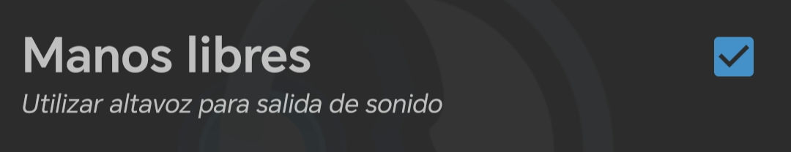

TeamSpeak cliente Voip que ofrece seguridad de nivel militar, latencia ultrabaja, el menor uso de recursos de cualquier software Voip y sonido envolvente 3D.
Este software es parte principal de nuestro servicio de Radioenlace, es el nucleo que hace posible el puente entre los diferentes radioenlaces y la posibilidad interactuar con diferentes dispositivos.
Todas las versiones para PC son gratis.
Todos los enlaces recopilado en esta WEB proceden de la pagina oficial TeamSpeak.
Server TeamSpeak Radioenlace VHF radioenlace.hopto.org
Alias lo puedes solicitar al Administrador EA7BEG 145.3375MHZ - 145.200MHZ Sevilla 145.2875MHZ Coruña tono 85.4HZ o por email EA7BEG@GMAIL.COM
Contraseña del canal como viene predeterminada en la aplicación "SIN DATOS".
Mientras está funcionado la aplicación TeamSpeak el micrófono no funciona para otras aplicaciones (Ejem. Grabar mensajes de voz en Whatsapp), el programa se queda en exclusivo con el permiso del micrófono, solución cerrar TeamSpeak completamente para devolver al sistema el permiso del micrófono
Algunas veces pierde la configuracion de manos libres y solo se escucha por auricular del móvil, volver activar en la configuracion TeamSpeak *Manos libres* Utilizar altavoz para salida de sonido.
